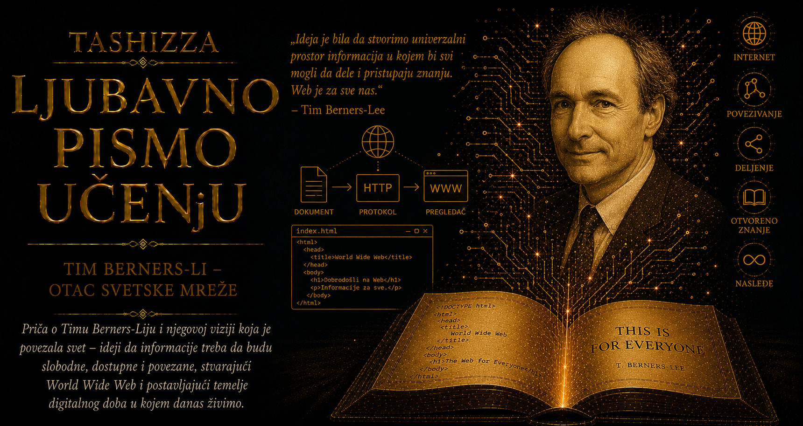

Ljubavno pismo učenju

Krajem osamdesetih godina internet je već povezivao računare, ali još nije pružao jednostavan i univerzalan prostor kroz koji bi se čovek mogao kretati od jedne informacije do druge. Elektronske poruke prelazile su velike udaljenosti, datoteke su se preuzimale sa udaljenih servera, a različiti informacioni sistemi čuvali su dragoceno znanje prema sopstvenim pravilima. Korisnik je morao da zna gde se određeni dokument nalazi, kojim programom mu se pristupa i kako je organizovan računar na kojem je sačuvan. Mrežna infrastruktura je postojala, dok su veze među dokumentima, ljudima i idejama ostajale rasute, skrivene u registratorima, lokalnim bazama podataka i sećanjima stručnjaka.
U CERN-u je taj problem bio naročito izražen. Velika evropska laboratorija za fiziku čestica okupljala je hiljade istraživača, inženjera i tehničara iz brojnih zemalja i ustanova. Ljudi su dolazili na određeno vreme, učestvovali u eksperimentima, vraćali se na matične univerzitete, a iza njih su ostajali izveštaji, nacrti, programski kod, zapisnici, rezultati merenja i znanje o sistemima koje su pomagali da se izgrade. Računari različitih proizvođača koristili su različite operativne sisteme i formate, pa je razumevanje složenog projekta često zavisilo od toga da li je u laboratoriji prisutan čovek koji pamti gde se nešto nalazi i kako je povezano sa ostatkom celine.
Tim Berners-Li je u tom rascepu između obilja znanja i teškoće njegovog pronalaženja prepoznao problem koji će daleko prevazići potrebe jedne naučne ustanove. Još tokom svog prvog angažmana u CERN-u, 1980. godine, napravio je lični program Enquire, nadahnut viktorijanskim priručnikom Enquire Within upon Everything. Program mu je omogućavao da beleži podatke o ljudima, projektima i softveru, a zatim da među tim beleškama uspostavlja veze. Iako je ostao mali i ograničen alat, u njemu se već nazirala presudna zamisao: informacija dobija punije značenje kada čovek može da vidi njene odnose sa drugim informacijama.
Kada se vratio u CERN, Berners-Li je svoju zamisao povezao sa hipertekstom, konceptom prema kojem dokument može sadržati veze koje čitaoca vode prema drugim dokumentima i pojmovima. Hipertekstualni sistemi već su imali dugu intelektualnu istoriju i važne prethodnike, među kojima su bili Vanevar Buš, Daglas Engelbart i Ted Nelson, ali su njihove realizacije uglavnom ostajale unutar pojedinačnih računara, programa ili zatvorenih baza. Berners-Li je zamislio da se hipertekst proširi preko interneta, tako da dokument sa jednog računara može neposredno voditi prema dokumentu na drugom kraju sveta, bez obzira na proizvođača računara, operativni sistem ili ustanovu kojoj server pripada.
U martu 1989. godine napisao je dokument Information Management: A Proposal, predlog za distribuirani informacioni sistem koji bi pratio promenljivu strukturu CERN-a. Njegov rukovodilac Majk Sendal ostavio je na dokumentu čuvenu ocenu „neodređeno, ali uzbudljivo”, prepoznavši moguću vrednost ideje čije se posledice još nisu mogle jasno sagledati. Berners-Li nije dobio veliku zvaničnu grupu niti unapred obezbeđen put do realizacije. Dobio je dovoljno prostora da nastavi, a zatim je morao strpljivo da objašnjava kolegama zbog čega bi povezani informacioni prostor mogao rešiti njihove svakodnevne teškoće.
Njegova vizija zahtevala je mnogo više od nadahnutog predloga. Morao je da je prevede u funkcionalan sistem, da napiše programe, ispita arhitektonske odluke i ubedi učene ljude iz neposrednog okruženja da pred njima nije još jedna prolazna aplikacija. Podršku je pronašao u belgijskom inženjeru Robertu Kajaou, koji je pomagao da projekat stekne institucionalnu vidljivost i da se njegov značaj približi rukovodstvu CERN-a. Njihova saradnja pokazala je da čak i najdalekosežnija zamisao napreduje kroz razgovor, razmenu znanja i ljude koji umeju da tuđu viziju prepoznaju pre nego što njena veličina postane očigledna.
Tokom 1990. godine Berners-Li je povezao nekoliko jednostavnih elemenata u celinu koja će promeniti svet. Dokumentima i drugim resursima bila je potrebna univerzalna adresa, iz čega su se razvili URI i URL oblici identifikovanja. Pregledaču i serveru bio je potreban zajednički način komunikacije, pa je nastao HTTP. Autorima je bio potreban razumljiv jezik kojim mogu da označe strukturu dokumenta i u njega unesu hiperveze, pa je oblikovan HTML. Nijedan od tih elemenata sam za sebe nije nosio čitavo čudo veba; njihovo usklađeno delovanje omogućilo je da se različiti računari i dokumenti uključe u isti informacioni prostor.
Na računaru NeXT napisao je prvi veb-server, nazvan httpd, i prvi program za pristup vebu, WorldWideWeb. Taj program je istovremeno služio kao pregledač i uređivač, jer je prvobitna vizija podrazumevala da čovek sa podjednakom prirodnošću može da čita tuđe stranice i stvara sopstvene. Na istom računaru nalazila se i prva veb-lokacija, posvećena samom projektu: objašnjavala je šta je World Wide Web, kako se postavlja server, kako se izrađuje stranica i na koji način novi učesnici mogu doprineti. Prva stranica nije veličala pronalazača, nego je druge ljude učila kako da postanu graditelji.
Berners-Li je od početka razumeo da sistem namenjen svima mora da radi na različitim računarima. Nikola Pelou, tada studentkinja angažovana u CERN-u, razvila je jednostavan linijski pregledač koji je mogao da se koristi na mnogim platformama, dok su Žan-Fransoa Grof, Bernd Polerman i drugi saradnici radili na kodu, dokumentaciji i povezivanju postojećih informacionih izvora. Avgusta 1991. Berners-Li je predstavio projekat široj internet zajednici i pozvao programere da ga isprobaju i proširuju. Ubrzo su nastajali novi serveri i pregledači, a razvoj NCSA Mosaica približio je grafički veb publici daleko izvan akademskih i tehničkih krugova.
Arhitektura veba nosila je jednu neobično smelu odluku: čovek je mogao da objavi stranicu i poveže je sa drugom stranicom bez prijavljivanja centralnom registru i bez dozvole vrhovnog upravljača mreže. Takva sloboda ostavljala je prostor za pokvarene veze, duplirane podatke, nesavršenost i nered, ali je istovremeno omogućavala brz, decentralizovan rast. Autor malog sajta dobijao je isto osnovno pravo povezivanja kao univerzitet, biblioteka, država ili velika kompanija. Univerzalnost je ugrađena u tehničku strukturu sistema kroz nekoliko otvorenih pravila koja prihvataju različitost jezika, sadržaja, uređaja i ljudskih namera.
Presudni trenutak nastupio je 30. aprila 1993. godine, kada je CERN stavio ključne komponente veb-softvera u javni domen, omogućivši njihovo korišćenje, umnožavanje, menjanje i širenje bez naknade. Kasnije je objavljeno i izdanje pod otvorenom licencom, čime su pravni uslovi dodatno učvršćeni. Veb je tako izbegao sudbinu tehnologije čiji bi temelj bio zatvoren patentima, licencama i poslovnim sporazumima. Škole, biblioteke, pojedinci, istraživačke ustanove i mali programerski timovi mogli su da postave server, naprave pregledač ili objave sadržaj bez plaćanja prolaza kroz vlasničku kapiju.
Kada su se pojavile kompanije zainteresovane za komercijalnu vrednost veba, Berners-Li je dosledno branio shvatanje prema kojem univerzalni informacioni prostor mora ostati otvoren. U svojim kasnijim objašnjenjima naglašavao je da tehnologija pod potpunom vlasničkom kontrolom verovatno nikada ne bi postala istinski univerzalna. U toj odluci nalazi se suština poruke koja se često sažima mišlju da veb nije običan proizvod namenjen kupcima, nego zajednički prostor i pokret kroz koji ljudi dele znanje, komuniciraju i stvaraju. Njegova velikodušnost počivala je na dubokom tehničkom razumevanju mreže: njena vrednost raste sa svakim novim čovekom koji može slobodno da joj doprinese.
Osnivanjem organizacije World Wide Web Consortium, W3C, 1994. godine, Berners-Li je nastavio da čuva interoperabilnost veba u trenutku kada su kompanije počele da uvode vlasničke dodatke i funkcije namenjene samo određenim pregledačima. Otvoreni standardi omogućili su da dokument napravljen u jednoj zemlji bude dostupan na uređaju proizvedenom u drugoj, da mali program pristupi istom sadržaju kao softver velike korporacije i da informacije nadžive pojedinačne proizvode. Rad na standardima često je tih, spor i nevidljiv široj javnosti, ali upravo iz njega nastaje svakodnevna sloboda da promenimo pregledač, uređaj ili operativni sistem, a ipak ostanemo povezani sa istim vebom.
Veb je promenio samo značenje objavljivanja i učenja. Pojedinac je dobio mogućnost da bez štamparije, distributivne mreže ili velike medijske kuće objavi tekst, istraživanje, program, fotografiju, umetničko delo ili obrazovni kurs i učini ga dostupnim ljudima širom sveta. Otvoreni softverski projekti mogli su da okupe saradnike koji se nikada nisu sreli, dok su univerziteti, biblioteke i naučne ustanove otvorili zbirke koje su vekovima bile dostupne samo onima koji mogu fizički doći do njih. Jedna veza počela je da vodi prema drugoj, jedan autor prema drugom, a radoznalost je dobila mogućnost da sama bira put kroz široku mrežu ljudskog znanja.
Otvorenost veba ipak nije unapred određivala plemenitost svega što će na njemu nastati. Na istoj infrastrukturi razvili su se obrazovanje, saradnja i stvaralaštvo, ali i nadzor, manipulativno oglašavanje, dezinformacije, uznemiravanje i poslovni modeli zasnovani na prikupljanju podataka i zadržavanju pažnje. Velike platforme koncentrisale su komunikaciju miliona ljudi u zatvorene sisteme, pa je Berners-Li tokom kasnijih decenija nastavio da se zalaže za neutralnost mreže, privatnost, otvorene podatke, pristupačnost, pravo korisnika na izbor i decentralizovaniji odnos prema digitalnom identitetu. Njegov rad na projektu Solid pripada istom dugom nastojanju da čovek ponovo stekne veću kontrolu nad svojim podacima.
U istoriji digitalnog sveta Berners-Lijeva upornost ima značaj koji prevazilazi trenutak pronalaska. On je godinama prevodio svoju viziju u jezik problema koje su njegove kolege mogle da prepoznaju, dokazivao je funkcionalnim kodom, prilagođavao različitim računarima, pozivao druge ljude da stvaraju sopstvene programe i zalagao se za pravne uslove pod kojima niko neće steći isključivu vlast nad njenim temeljem. Zamisao bez realizacije ostala bi arhivirani predlog, realizacija bez saradnika laboratorijski alat, a tehnički uspeh bez otvorenih pravila još jedno zatvoreno tržište.
Njegovo najveće delo stoga živi u digitalnom ekosistemu koji drugima ostavlja pravo da nastave. Veb je rastao zahvaljujući Robertu Kajaou, Nikoli Pelou, ranim autorima servera i pregledača, administratorima, univerzitetskim laboratorijama, telima za standardizaciju, programerima i milijardama ljudi koji su objavljivali sopstvene tragove. Berners-Li je postavio dovoljno pouzdane temelje da različiti sistemi mogu da sarađuju i dovoljno otvorene granice da nijedan tvorac, ustanova ili kompanija ne može unapred odrediti sve što će na njima nastati.
Ser Tim Berners-Li fascinira upravo celovitošću tog stvaralačkog puta: uočio je potrebu koju drugi još nisu osećali u njenom punom obimu, zamislio univerzalno rešenje, stvorio nove tehnologije, godinama uveravao učene kolege zbog čega je povezani prostor znanja neophodan, a zatim sopstvenu zamisao doveo do delatnog oblika. Kada je veb dobio ogroman odziv i otvorio mogućnost neslućenog bogatstva, sačuvao je vernost prvobitnom porivu i založio se da njegov temelj pripada svima. Sloboda kretanja širokom mrežom znanja za njega je predstavljala uslov njenog postojanja.
Tim Berners-Li je internet pretvorio u prostor u kojem ljudi mogu da ostavljaju tragove jedni za druge, a učenik iz svog doma da pronađe rad udaljenog naučnika, pročita ga, poveže sa drugim izvorima i započne sopstveno istraživanje. Njegovo delo pokazuje da civilizacijska tehnologija nastaje kada je zamisao dovoljno smela da proširi granice mogućeg, dovoljno precizna da pouzdano radi i dovoljno velikodušna da budućim stvaraocima ne traži dozvolu. Veb je postao zajednički dom zato što čovek koji ga je izgradio nije pokušao da zadrži ključeve svih njegovih vrata.